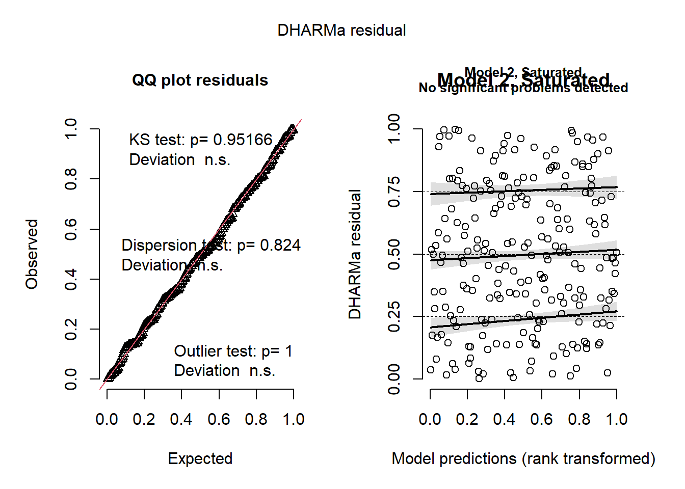
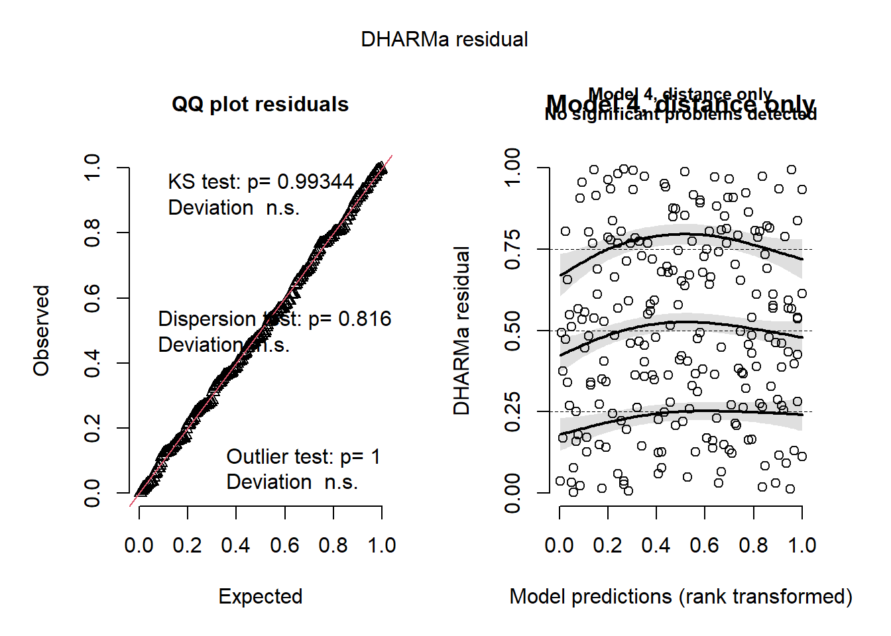
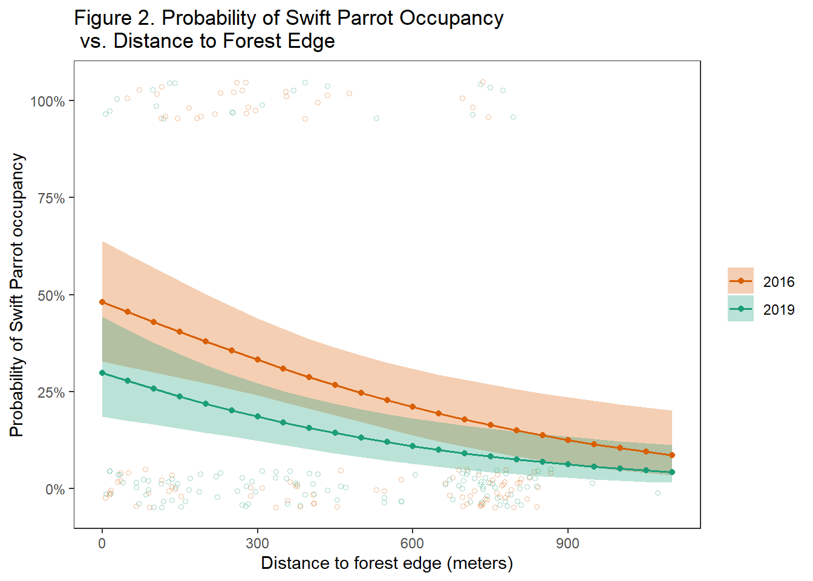
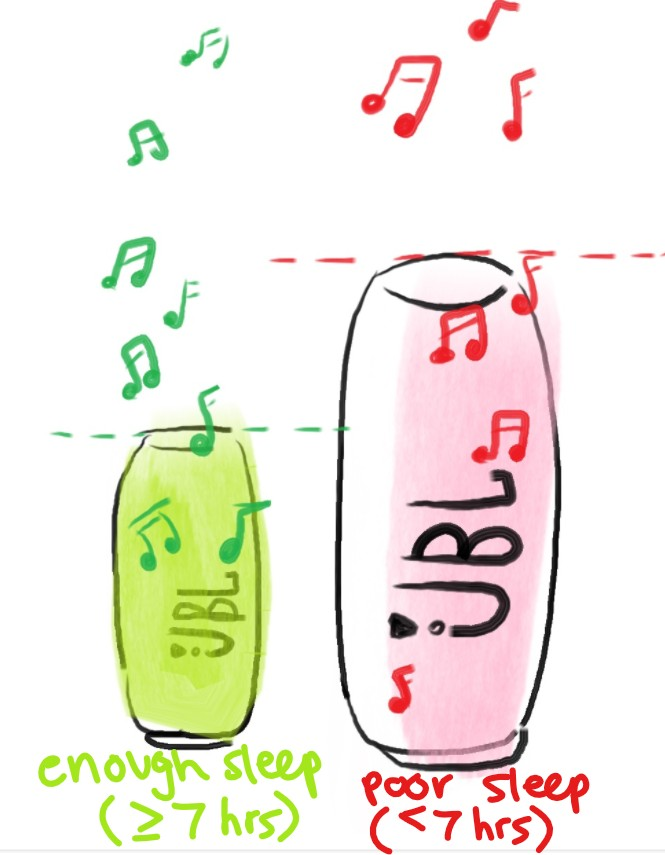

library(tidyverse)
library(janitor)
library(dplyr)
library(ggplot2)
library(scales)
library(ggeffects)
library(lubridate)
library(DHARMa)
library(MuMIn)ENVS-193DS_spring-2025_final
github repo: https://github.com/emilyl-2324/ENVS-193DS_spring-2025_final.git
Problem 1
a. Transparent statistical methods (8 points)
What statistical tests did your co-worker use? Clearly connect the test to the part that you are addressing (e.g. “In part 1, they used _______. In part 2, they used _______.”).
In part 1, they used a person’s r test, since the study is finding the correlation between two variables. In part 2, they used an ANOVA test since the study is comparing the means of two or more groups (the test compares the mean nitrogen load from 5 different sources).
b. More information needed (8 points)
The test in part 2 seems familiar to you, but you think there’s more that your co-worker needs to do to provide more context for the results. List 2 additional tests and/or pieces of information that should be included, and explain why those tests and/or pieces of information would add useful additional context.
Be specific and use variables and/or statistics from the example.
One additional test is a test for normality, since ANOVA assumes the data is normally distributed. This can be done through a shapiro-wilk test for each of the sources of nitrogen load (urban land, atmospheric deposition, fertilizer, wastewater treatment, and grasslands). If test-statistics is close to 1, then the sample is normally distributed and if the sample doesn’t equal 1, then the sample is not normally distributed.
Another test that should be done is the f-test, which tests for significance between groups, where the f-statistic is a ratio of two variances: the ms (mean square) among the group and the ms within the group. If the ms among groups is significantly larger than ms within groups, the f-stat is large and the null hypothesis should be rejected.
c. Suggestions for rewriting (20 points)
In 1-3 sentences, write new research statements to include relevant components from parts a-b and a full test summary in parentheses to be transparent about the statistical method.
Be sure that your rewritten statements clearly delineate the biological narrative from the statistical summary. See lecture and workshop for examples of writing.
Note that your co-worker didn’t include any information about the test statistic, distribution, etc., and that you only know the p-value. For any part that you do not know, list that part with text. For example, you could write something like: “… r = correlation coefficient, p = 0.03, a = significance level …”
1) We rejected the null hypothesis that there is no correlation between distance from headwater (km) and annual total nitrogen load (kg year-1) (p = 0.03).
We found a specific type of relationship (Pearson’s r = correlation coefficient, p = 0.03, a = significance level) between the distance from headwaters (in km) and the annual total nitrogen load (kg/year), where headwaters distance significantly predicted/had no correlation with annual total nitrogen load.
2) We rejected the null hypothesis that there is no difference in average nitrogen load (kg year-1) between sources (urban land, atmospheric deposition, fertilizer, wastewater treatment, and grasslands) (p = 0.02).
We found an effective size (n^2 = effective size) between sources (urban land, atmospheric deposition, fertilizer, wastewater treatment, and grasslands) in mean nitrogen load (in kg/year) (F-test, F(among groups df, within groups df) = f-statistic, p = 0.02, a = significance level)
We determined the group variances (F-test, F(among groups df, within groups df) = f-statistic, p = 0.02, a = significance level) of the average nitrogen load (in kg/year) between different sources (urban land, atmospheric deposition, fertilizer, wastewater treatment, and grasslands).
Problem 2. Data visualization (36 points)
a.
sst <- read_csv("SST_update2023.csv") #create new object and load in csv data
sst_clean <- sst |> #create new object sst_clean
mutate(
date = ymd(date), # ensure date is in Date format
year = year(date), #create column for year
month = month(date) #create column for month
) |>
mutate(year = as_factor(year)) |> #save year as a factor
filter(year %in% c("2018", "2019", "2020", "2021", "2022", "2023")) |> #only include years 2018-2023
group_by(year, month) |> #group by month and year
summarize(mean_monthly_sst = mean(temp, na.rm = TRUE), .groups = "drop") |> #find the mean monthly sst
mutate(month = month(month, label = TRUE, abbr = FALSE))
slice_sample(sst_clean, n = 5) #show only 5 rows of data# A tibble: 5 × 3
year month mean_monthly_sst
<fct> <ord> <dbl>
1 2021 December 14.4
2 2022 July 17.0
3 2022 December 14.8
4 2019 August 17.0
5 2022 February 14.1str(sst_clean) #display structure of the table tibble [72 × 3] (S3: tbl_df/tbl/data.frame)
$ year : Factor w/ 42 levels "1982","1983",..: 37 37 37 37 37 37 37 37 37 37 ...
$ month : Ord.factor w/ 12 levels "January"<"February"<..: 1 2 3 4 5 6 7 8 9 10 ...
$ mean_monthly_sst: num [1:72] 15 14.3 13.5 12.8 13.6 ...b
sst_clean_abbr <- sst_clean |> #create new object with months abbreviated
mutate(month = case_when( #change month name to abbreviations
month == "January" ~ "Jan",
month == "February" ~ "Feb",
month == "March" ~ "Mar",
month == "April" ~ "Apr",
month == "May" ~ "May",
month == "June" ~ "Jun",
month == "July" ~ "Jul",
month == "August" ~ "Aug",
month == "September" ~ "Sep",
month == "October" ~ "Oct",
month == "November" ~ "Nov",
month == "December" ~ "Dec",
TRUE ~ month
)) |> #reoder months in order
mutate(month = fct_relevel(month, "Jan", "Feb", "Mar", "Apr", "May", "Jun", "Jul", "Aug", "Sep", "Oct", "Nov", "Dec"))ggplot(data = sst_clean_abbr, #create plot using ggplot function
aes(x = month,
y = mean_monthly_sst,
color = year,
group = year))+
geom_point() + #layer adds data points from sst_clean_abbr dataframe
geom_line(size = 0.7) + #adds lines to connect data points
labs(x = "Month", #label x and y-axis
y = "Mean Monthly Sea Surface Temperature (°C)"
) +
theme(panel.border = element_rect(color = "black", fill = NA, linewidth = 0.7)) + #change theme and add panel border
#manually assign color to each water year
scale_color_manual(values = c(
"2018" = "#99d8c9",
"2019" = "#66c2a4",
"2020" = "#41ae76",
"2021" = "#238b45",
"2022" = "#006d2c",
"2023" = "#00441b")
) +
theme(panel.background = element_rect(color = "white", fill = "white"), #white panel background
legend.position = c(0.11, 0.73), #legend position to top right
plot.title.position = "plot") #align title with plot border 
Problem 3:
a. Response variable (2 points)
In 1-2 sentences, explain what the 1s and 0s mean in this data set biologically.
The 1s mean the nest is being occupied by a bird species and the 0s mean the nest isn’t occupied by a bird species.
b. Purpose of study (2 points)
The authors compare nest box occupancy between 3 species: Swift Parrots, Common Starlings, and Tree Martins. In 1-2 sentences, explain the main difference between Swift Parrots and the other two species in the context of this study.
The purpose of the study is to find the relationship between the nest position (distance from forest edge) and non-target species exploitation of target-species nest boxes. The swift parrots are the target species and the common starlings and tree martins are non-target species.
c. Difference in “seasons” (2 points)
The authors compare two years (that they refer to as “seasons”). In 1-2 sentences, define what those years/seasons are, and explain how they differ in the context of this study.
The authors compare the data between 2 seasons, which refers to the swift parrot breeding season (during summer) in 2016 and 2019.
d. table:
Make a table of all the models you will need to run. You will run 4 models: a null model, a saturated model, and two other models with different combinations of predictors. Your table should have 4 columns: (1) model number, (2) season, (3) distance to forest edge, and (4) model description.
| Model number | season | distance to forest edge | model description |
|---|---|---|---|
| 1 | null model (no predictors) | ||
| 2 | X | X | all predictors (full model) |
| 3 | X | X | season only |
| 4 | X | distance only |
e. Run the models (8 points)
Write your code to run all your models. Do not display any output.
nest_data <- read_csv("occdist.csv") #create object nest_data from loading in csv file
nest_data_clean <- nest_data |> #make an object called nest_clean
clean_names() |> #clean the names to get rid of "."
mutate(season = as.factor(season)) #make season a factormodel1 <- glm(sp ~ 1, #null model (no predictors)
data = nest_data_clean,
family = "binomial") #specifies a binary response variable (Swift Parrot occupancy in the nest boxes)
model2 <- glm(sp ~ season + edge_distance, #saturated model (season and distance)
data = nest_data_clean,
family = "binomial")
model3 <- glm(sp ~ season, #season only
data = nest_data_clean,
family = "binomial")
model4 <- glm(sp ~ edge_distance, #distance only
data = nest_data_clean,
family = "binomial")f. Check the diagnostics
# Simulate residuals for each model
residual1 <- simulateResiduals(model1) #null
residual2 <- simulateResiduals(model2) #saturated
residual3 <- simulateResiduals(model3) #season
residual4 <- simulateResiduals(model4) #distance
par(mfrow = c(2, 2)) #layout of plot
#plot residuals
plot(residual1, main = "Model 1, Null") #plot residual of model1
plot(residual2, main = "Model 2, Saturated") #plot residual of model2
plot(residual3, main = "Model 3, year only") #plot residual of model3
plot(residual4, main = "Model 4, distance only") #plot residual of model4
g. Select the best model (6 points)
Using Akaike’s Information Criterion (AIC) from the MuMIn package, choose the best model. In text, write what the best model was (i.e. “The best model as determined by Akaike’s Information Criterion (AIC)…”). Use the predictors and the response variable to describe the model, not the model number that you assigned.
AICc(model1, #function calculates AIC of models 1-4
model2,
model3,
model4) |>
# arranging output in descending order of AIC
arrange(AICc) df AICc
model2 3 226.3133
model4 2 229.6716
model3 2 236.3744
model1 1 238.8318The best model as determined by Akaike’s Information Criterion was model depicting the relationship between swift parrot nest occupancy and the predictors: season and forest edge distance from nest.
h. Visualize the model predictions (24 points)
Create a plot showing model predictions with 95% confidence intervals and the underlying data. Show and annotate all code. Show the output. For full credit:
make sure the x- and y-axis labels are written in full, take out the gridlines, use colors that are different from the default
# Make predictions for all values of edge_distance, grouped by season
model2_prediction <- ggpredict(model2, terms = c("edge_distance", "season"))
# Convert predictions to a data frame, where group refers to season
model2_data <- as.data.frame(model2_prediction) |>
clean_names()
ggplot(model2_data, aes(x = x, #make ggplot using model2_data
y = predicted,
color = group,
fill = group)) +
geom_ribbon(data = model2_data, #add ribbon layer, showing the 95% confidence interval
aes(ymin = conf_low,
ymax = conf_high),
alpha = 0.3,
color = NA) +
geom_line(size = 0.7) + #layer adds lines connecting data points
geom_point(size = 1.5) + #adds data points
geom_jitter(data = nest_data_clean, #add underlying data points from nest_data_clean to show occupancy of swift parrots
aes(x = edge_distance,
y = sp,
color = season),
inherit.aes = FALSE,
shape = 1, size = 1.2, alpha = 0.4, height = 0.05) +
scale_color_manual(values = c("2016" = "#D95F02", "2019" = "#1B9E77")) + #manually change colors
scale_fill_manual(values = c("2016" = "#D95F02", "2019" = "#1B9E77")) +
scale_y_continuous(labels = percent_format(accuracy = 1)) + #make y-axis show percentages
theme_bw() + #change theme and remove grid, bold title, remove legend title
theme(
panel.grid.major = element_blank(),
panel.grid.minor = element_blank(),
legend.title = element_blank()
) +
labs( #add labels for x, y-axis and title
x = "Distance to forest edge (meters)",
y = "Probability of Swift Parrot occupancy",
title = "Figure 2. Probability of Swift Parrot Occupancy\n vs. Distance to Forest Edge",
) 
i. Write a caption for your figure. (7 points)
Include a figure number, title, description of the figure, and data citation.
Figure 2. Predicted Swift Parrot Nest Box Occupancy vs. Distance to Forest Edge. Data from dataset (Stojanovic, D., Owens, G., Young, C.M., Alves, F. and Heinsohn, R. 2021). Each colored circle represents Swift Parrot presence or absence in a nest box, where 100% is present and 0% is absent. Colors represent the year of the breeding season (orange circles: data from 2016, teal circles: data from 2019).
j. Calculate model predictions (4 points)
Calculate the predicted probabilities of Swift Parrot nest box occupancy with 95% at 0 m from forest edge and 900 m from forest edge for each level in season. Show and annotate all code. Display the output.
ggpredict(model2, terms = c("edge_distance [0]", "season")) #predict occupancy probability at forest edge for both seasons# Predicted probabilities of sp
season: 2016
edge_distance | Predicted | 95% CI
--------------------------------------
0 | 0.48 | 0.33, 0.64
season: 2019
edge_distance | Predicted | 95% CI
--------------------------------------
0 | 0.30 | 0.18, 0.44ggpredict(model2, terms = c("edge_distance [900]", "season")) #predict occupancy probability 900ft from forest edge for both seasons# Predicted probabilities of sp
season: 2016
edge_distance | Predicted | 95% CI
--------------------------------------
900 | 0.12 | 0.06, 0.24
season: 2019
edge_distance | Predicted | 95% CI
--------------------------------------
900 | 0.06 | 0.03, 0.13k. Interpret your results (16 points)
Write 3-5 sentences summarizing what you found, making references to the figure you made in part h and the predictions you calculated in part j. Your summary should include your interpretation of:
When the nest-boxes are placed closer to the forest edge, there is a higher probability of swift parrot occupancy in those nest boxes. The nest box occupancy in 2019 was predicted to be 30% at 0 meters and 6% at 900 meters and in 2016, the nest box occupancy was predicted to be 48% at 0 meters and 12% at 900 meters.
This makes sense biologically as swift parrots are drawn to flowering trees, which could be higher in abundance at the forest edges likely due to greater sunlight exposure. Additionally, competition between non-target species can be a possible reason accounting for the overall decrease in nest-box occupancy probability in 2019 for both forest edges distances compared to 2016. Since swift parrots
Problem 4:
a. Comparing visualizations (20 points)
Compare and contrast your affective visualization from Homework 3 and the exploratory visualizations you made for Homework 2. In 1-3 sentences each, explain:
The main difference between the exploratory data visualizations and the affective visualizations is the exploratory data were made using ggplot and depicted solely date while the affective visualization could be more abstract and include visual elements that aren’t necessarily related to the data but can add to its visual appeal.
Both visualizations depict the underlying data points. In the exploratory data visualization, observations can be seen on the ggplot as circles or data points In the affective visualization, each observation was drawn out as a music clef.
It was difficult to notice trends from the exploratory data since there were only a handful of data points collected when I made the visualization. However, looking at the affective visual, you can notice that there is a higher average listening time on days with less than 7 hours of sleep compared to days with more than 7 hours of sleep. The trends are different since the affective visual is based on a data frame with more observations, which suggests that the data underlying the affective visualization is more reliable than that of the exploratory visual.
I didn’t really get suggestions to make significant changes to the affective visualization since all the comments stated something along the lines of “the visual was easy to understand”.
b.
